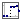
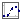
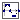

This package provides source components akin to the blocks provided in Modelica.Blocks.Sources, but with the difference that they provide a clocked output signal.
As an effect it is not necessary to use an intermediate Sample block if the output signal is connected to a system that requires a clocked input signal. Therefore, it it can be slightly more convenient to use the blocks provided in this package than to use the blocks offered by Modelica.Blocks.Sources (since one does not need to add an additional Sample block for the transition from a continuous time signal to a clocked signal).
Extends from Modelica.Icons.SourcesPackage (Icon for packages containing sources).| Name | Description |
|---|---|
|  Step | Generate step signal of type Real |
|  Ramp | Generate ramp signal |
|  Sine | Generate sine signal |
The block is similar to the block in Modelica.Blocks.Sources.Step, but adapted to work in clocked partitions (by internal sampling of the continuous time variable).
The Real output y is a step signal:
See model Modelica_Synchronous.Examples.Elementary.RealSignals.TimeBasedStep.
| Name | Description |
|---|---|
| height | Height of step |
| offset | Offset of output signal y |
| startTime | Output y = offset for time < startTime [s] |
| Name | Description |
|---|---|
| y | Connector of clocked, Real output signal |
The block is similar to the block in Modelica.Blocks.Sources.Ramp, but adapted to work in clocked partitions (by internal sampling of the continuous time variable).
The Real output y is a ramp signal:

See model Modelica_Synchronous.Examples.Elementary.RealSignals.TimeBasedRamp.
| Name | Description |
|---|---|
| height | Height of ramps |
| duration | Durations of ramp [s] |
| offset | Offset of output signal |
| startTime | Output = offset for time < startTime [s] |
| Name | Description |
|---|---|
| y | Connector of clocked, Real output signal |
The block is similar to the block in Modelica.Blocks.Sources.Sine, but adapted to work in clocked partitions (by internal sampling of the continuous time variable).
The Real output y is a sine signal:

See model Modelica_Synchronous.Examples.Elementary.RealSignals.TimeBasedSine.
| Name | Description |
|---|---|
| amplitude | Amplitude of sine wave |
| freqHz | Frequency of sine wave [Hz] |
| phase | Phase of sine wave [rad] |
| offset | Offset of output signal |
| startTime | Output = offset for time < startTime [s] |
| Name | Description |
|---|---|
| y | Connector of clocked, Real output signal |